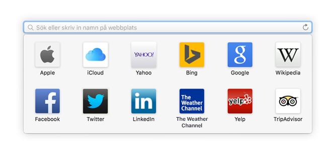
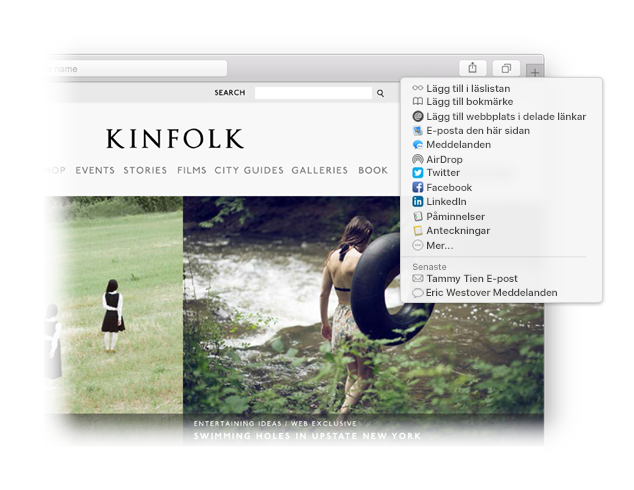

Hitta en favorit.
Klicka på det smarta sökfältet för att komma åt dina favoritwebbplatser. Klicka på en webbplats för att öppna den.

Fäst en webbplats.
Dra en flik mot vänster när du vill fästa en webbplats så att den håller sig kvar i flikfältet.

Dela en länk.
Klicka på  när du vill skicka en länk via e-post eller SMS, dela den på Facebook eller Twitter eller lägga till den i Anteckningar.
när du vill skicka en länk via e-post eller SMS, dela den på Facebook eller Twitter eller lägga till den i Anteckningar.